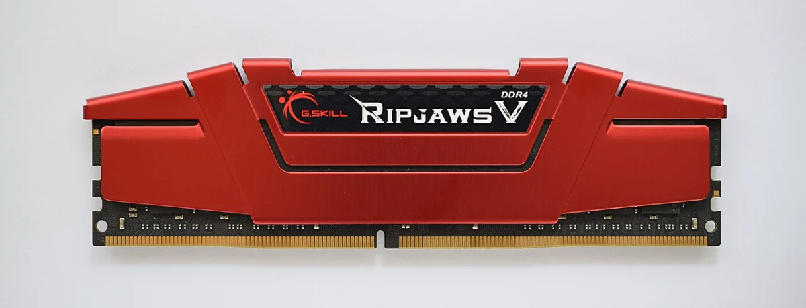

电脑反复重启 / 开机报警一长两短？先重插内存条
⚠ 需谨慎：动手前必须关机并拔掉电源线，按一下电源键放掉残余电。台式机内存带电插拔会烧槽甚至烧条；秋冬干燥季先摸一下金属暖气片放掉身体静电再碰零件。全程不需要用力砸、撬——插不进去一定是方向不对。
💡 一句话结论
「风扇转一下就停、反复重启循环、主板 Debug 灯停在 DRAM、报警一长两短」——这些十有八九是内存条接触不良，尤其发生在搬动过机箱、加过新内存、很久没清灰之后。断电 → 拔条 → 橡皮擦金手指 → 插回听见咔哒，五分钟解决一大半此类开机故障。
⚡ 30 秒快速排查（先试这个）
- 关机、拔电源线，按住电源键 5 秒放电。期望结果：安全前提就位。
- 打开侧板，找到长条状的内存条，掰开两端卡扣，垂直拔出。期望结果：条子顺利取下，两端卡扣完全张开。
- 用橡皮沿金手指（金色的那排触点）擦拭两面到发亮，对准防呆缺口垂直按回，听到两端「咔哒」。期望结果：开机一次点亮。
- 若有两根内存，先只插一根试（换槽位再试另一根），定位是哪根/哪个槽的问题。期望结果：单根能点亮，再逐根加回。
适用 / 不适用
适用
- 搬动/清灰/加装内存后开不了机或反复重启。
- 主板 Debug 灯停在 DRAM（有的板显示数字代码 55、C5 等）。
- 有报警声（一长两短最常见，部分小板只有蜂鸣一声）。
- 能点亮但「可用内存比实际少」（比如 16G 只认 8G）：一根没被识别，重插一遍。
不适用
- 能进系统只是使用中蓝屏、死机：先按「蓝屏代码怎么看」走软件排查，蓝屏不一定是内存。
- 开机有画面只是卡 Logo 进不了系统：看「开机卡在主板 Logo」。
- 笔记本且内存是板载（焊死）的：重插这条路不存在，直接送修。
开始前确认
- 电源线已拔、已按电源键放电。
- 侧板打开后能看到竖插的内存条（笔记本是平躺的小条，在底盖下）。
- 橡皮是干净的白色橡皮，不要用带磨砂颗粒的。
- 手机拍下拆之前的插槽占用和线缆走向，方便复原。
- 如果刚装过新内存：先全拔掉，只留原来那根确认机器本身正常。
怎么确认修好了
- 冷开机一次点亮，连续开关机 3 次都正常。
- 「任务管理器 → 性能 → 内存」显示的容量与实际安装一致。
- 若开了 XMP/EXPO 高频档，跑一局游戏或用「Windows 内存诊断」（
mdsched）跑一轮无报错。
还是不行？
- 单根能亮、两根同插就重启 → 双通道兼容问题：更新主板 BIOS 到最新，或两条对调槽位。
- 重插后能点亮但用着蓝屏 → 内存颗粒边缘性问题，用 MemTest86 整夜测试确认，坏则换。蓝屏代码读法见「电脑蓝屏了怎么办：先学会读蓝屏代码」。
- 报警依旧、橡皮擦无效 → 换一根已知正常的内存交叉验证，定位条或板。
预防
- 每次清灰时顺手把内存拔插一遍，氧化层最爱在这种时候捣乱。
- 机箱搬动后开机异常，第一反应就是重插内存和显卡。
- 买内存优先同品牌同型号套装，双通道兼容性远好于两条散凑。
更新日志
- 2026-10-24 v1.0：首版发布。覆盖断电放电、拔条、擦金手指、单根定位四步。
分步骤
断电放电，开侧板
- 关机，拔掉电源线（笔记本同时断开充电器）。
- 按住电源键 5 秒放残余电。
- 拧下侧板螺丝，打开侧板；冬季先摸金属物体放静电。
期望结果：主板、内存清晰可见。失败了怎么办：侧板是免工具卡扣的，按说明书方向掰，不要硬撬。
拔出内存条

内存条底部那排金色触点就是「金手指」，缺口偏在一侧——这个防呆缺口决定它只有一个方向能插进去。照片拍的是台式机长条（DIMM），笔记本用的是更短的 SO-DIMM。 图片来源：Wikimedia Commons / CC BY-SA 4.0- 双手拇指同时向外掰内存槽两端的卡扣，条子会自己弹起。
- 拿住条子两端，垂直向上拔出。
期望结果：条子取下，金手指露出。失败了怎么办：卡扣掰不开——确认掰的方向（都是向外），不要用螺丝刀硬别。
橡皮擦金手指
- 用橡皮沿金手指两面各擦 5-10 个来回，直到触点发亮、没有暗色氧化层。
- 用干纸巾把残留橡皮屑清干净，不要用手指直接摸金手指。
期望结果：触点两面均匀发亮。失败了怎么办：触点有发黑烧灼痕迹 → 这根条可能已损坏，直接换条测试。
插回并一次点亮
- 对准插槽的防呆缺口（错位是插不进去的），垂直向下按压条子两端，听到「咔哒」且卡扣自动立起夹紧。
- 接回电源线开机。
期望结果：一次点亮进系统。失败了怎么办：仍报警 → 只插一根换槽位试，见步骤 5。
多根内存时逐根定位
- 只插一根，优先插说明书推荐的槽位（常见是第 2、4 槽，即 A2/B2）。
- 依次换条、换槽测试：A 条 + 槽 2 点亮 → 换 B 条进槽 2 → B 条正常则把 A 条插回槽 4。
期望结果：定位出「坏条」或「坏槽」。失败了怎么办：任何单根单槽都点不亮 → 可能是槽内异物或主板问题，用气吹清槽后再试；仍不行送修主板。哪根条单独都不亮 → 两根条同时坏的概率低，考虑是主板或 CPU 内存控制器问题，送修。
相关教程
最后更新：2026-10-25 · 复核：内容组
读者反馈
这篇教程解决你的问题了吗？
点一下告诉我们结果。「没解决」可以指出问题段落，管理员会回到原文核对并更新。